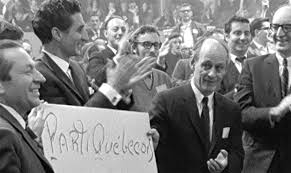
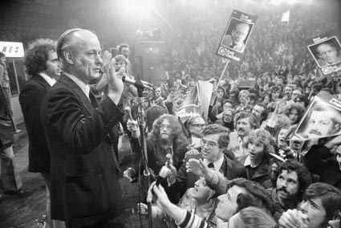

1. The Quiet Revolution (1960s)
Significance: The Quiet Revolution happened in the 1960s and it was a time when Quebec changed a lot. People in Quebec wanted more control over their own lives and started to question if they should be part of Canada. This was the beginning of the push for Quebec to possibly become its own country, which led to the idea of holding a referendum later on.
2. Formation of the Parti Québécois (1968)
Significance: In 1968, René Lévesque started the Parti Québécois. They wanted Quebec to become its own nation and apart from Canada. The PQ became a big part of Quebec’s politics and would later be the group pushing whether Quebec should leave Canada or not.
3. The Election of the Parti Québécois (1976)
Significance: In 1976, the Parti Québécois won the election in Quebec and became the ruling party. This was important because it meant they could now try to hold a vote to decide if Quebec should separate from Canada or not. This election set the stage for the vote in 1980.
4. The Bill 101 (1977)
Significance: In 1977, the Parti Québécois passed Bill 101 which made French the official language in Quebec. This was part of their plan to make Quebec more independent and create its identity as a French speaking nation. Bill 101 added to the feelings of wanting more control over Quebec's future, leading to the 1980 referendum.